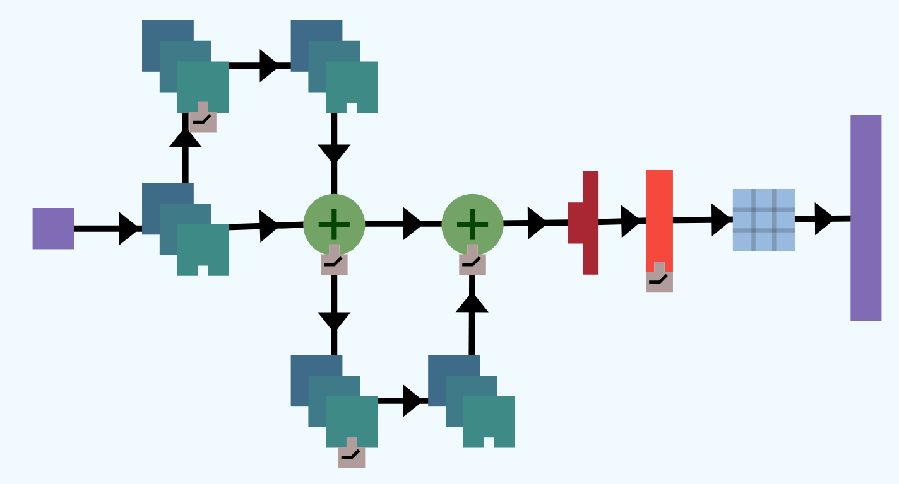
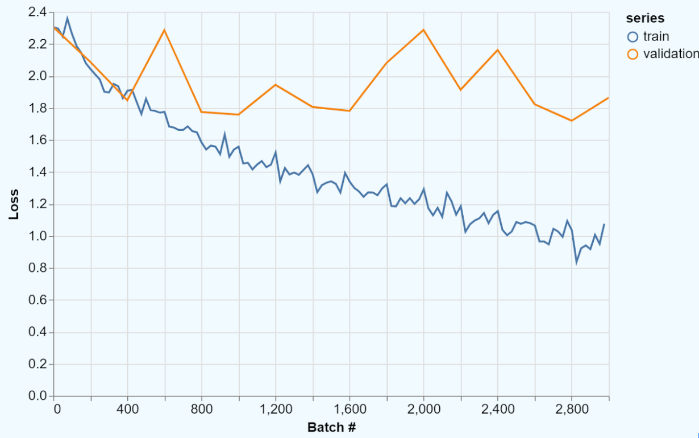
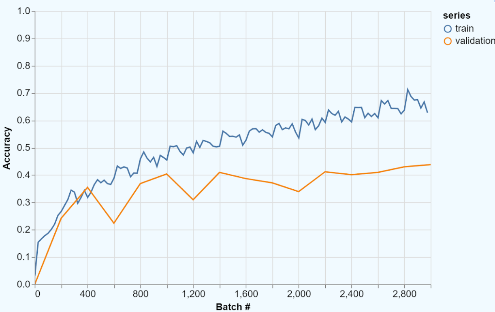

Jesse Michel, Zack Holbrook, Stefan Grosser, Rikhav Shah
with advising from Hendrik Strobelt and Gilbert Strang.
First prototyped at HackMIT.
The words weight sharing give the key idea of CNNs. The weight matrix \(A\) that connects one layer to the next layer has only a small number of independent entries. So optimizing those weights is much faster than for a fully-connected (dense) architecture.
In a one-dimensional problem, suppose the inputs (layer zero) are given by a vector \(v = (v_1,...,v_n)\). A convolution will multiply \(v\) by a weight matrix \(A\) with constant diagonals. Then the same set of weights (say 3 weights) is repeated all along the layer :
\[A= \begin{bmatrix} a_{-1} & a_0 & a_1 & & \\ & a_{-1} & a_0 & a_1 & \\ & & a_{-1} & a_0 & a_1 \\ \end{bmatrix}\] This \(A\) has \(n = 5\) inputs and \(m = 3\) outputs. A is shift-invariant: a convolution = filter = Toeplitz matrix. Convolutions are especially important for images with many pixels. The \(3\) independent weights \(a_{-1}, a_0, a_1\) might change to \(3 \times 3=9\) weights in 2D. Those 9 numbers are \(a_{ij}\) for \(i = -1,0,1\) and \(j = -1,0,1\). An input with its 8 neighbors (in a \(3 \times 3\) square) is multiplied by \(a_{00}\) and its \(8\) neighbors–that sum of 9 terms gives one output in \(Av\). As usual, a bias vector \(b\) is added and each component of \(Av + b\) is activated (or not) by a function like ReLU : the new layer contains \(\textrm{ReLU}(Av + b)\).
This 2D matrix \(A\) is not so easy to display. You should see that a \(3 \times 3\) square around an input vector \(v\) of size \(n \times n\) will produce an output \(Av\) of size \((n - 2) \times (n - 2)\), in the same way that 5 inputs gave 3 outputs in 1D. Notice that we only had \(3 \times 3 = 9\) (or maybe \(5 \times 5 = 25\)) independent weights in 2D, because the convolution not only shares weights but it is local.
In 2015, a research team at Microsoft won the ImageNet Large Scale Visual Recognition Challenge with record performance using a ResNet. Since 2015, variants of ResNets have dominated the competition, exceeding human performance in the given task. They have become a popular choice of architecture for a broad variety of image recognition tasks and are relatively easy to implement and train.
ResNets are a type of convolutional neural network (CNN) that have identity shortcuts, which are paths through the network that skip layers, thereby creating shortcuts through the network. We provide a typical example of a ResNet below: 
Identity shortcuts mean that the learned parameters are residuals. Mathematically, if \(R(x)\) is a sequence of convolutional layers with ReLUs, known as a residual block, for example, let \[R(x) = \textrm{Conv}(\textrm{ReLU}(\textrm{Conv}(x))).\] Then the output of the residual block will be \(R(x) + x\), where \(x\) is the identity pass-through. If the neural network is trying to approximate some function \(F(x)\), then a perfect residual block \(R^*(x)\) will be such that \(R^*(x) = F(x) - x\), which is exactly a residual after subtracting the input image.The amazing property of ResNets is its ability to scale well, leading to deeper neural networks that still train well. As networks get larger, a number of problems arise.
Large networks tend to train slowly, but the weight sharing of CNNs mean that each residual block has relatively few parameters to train. Large networks also tend to have the problem of the vanishing gradient – where weight updates from gradient descent diminish to the point where the network does not improve even with more training time. The identity shortcuts in ResNets give a path for the gradients to flow, avoiding the problem of the vanishing gradient.
The flatten layer takes in a multidimensional input and produces a single dimensional output. For example, the CIFAR dataset is a collection of images which is 3-dimensional since it is a collection of 2-dimensional images that are 32x32 pixels and has 3 color channels (Red, Green, Blue). A Flatten layer could take data from this dataset as an input, and would produce a 1 dimensional vector of size 32*32*3 = 3072.
A concatenate layer takes two or more layers and concatenates the outputs into a single output by stacking the inputs. For example, it would concatenate two vectors of size 10 into a vector of size 20 by stacking one on top of the other.
Dropout layers ignore a random fraction of the incoming units during training time. For example, if the rate is 0.1, then on each forward pass the dropout layer will randomly select 10% of the weights and assign them to 0. Adding a dropout layer with a rate of 0 will make no change to the network, while a rate of 1 will have the dropout layer output 0.
Dropout is commonly used to prevent overfitting (for more information, see our write-up on the topic). One may think of dropout as having the network learn a collection of weak classifiers that during testing come together to create a more powerful classifier. For those who are familiar with this terminology, it is boosting using an ensemble model. It also has the convenient property of speeding up training since fewer weights are required in each forward pass.
A neural network sometimes learns too well. It identifies trends specific only to the training data and thus fails to generalize. This problem of fitting the training data too closely is called overfitting. In the following figure shows the decision boundary – the curve that determines the prediction of the classifier – in the cases of underfitting, fitting well (normal), and overfitting.

When a classifier overfits, it performs far better on the training data than on the test data. Therefore, the training accuracy will be much higher than the validation accuracy and the training loss will be much lower than the validation loss. We have provided an example of this below.
 Overfitting exemplifies why cross validation is so important; without a validation set, we would not be able to identify that the model will fail to generalize.
So, how can we combat overfitting and make sure that a model finds generalizable traits?
One way to prevent overfitting is regularization, which takes the form of adding in a new term that guides the model towards a simpler solution. Recall that in classification problems we begin with pairs of inputs and their classifications \[(x_1, y_1), (x_2, y_2), \dots, (x_n, y_n).\] From this, we want to find a function \(f\) that will accurately predict the classes of new samples of data. So if our original problem was \[\min_f \sum_{i=1}^{n} C(f(x_i), y_i),\] where \(C\) calculates the cost of predicting \(f(x_i)\) when the true value is \(y_i\), then the regularized loss will be \[\min_f \sum_{i=1}^{n} C(f(x_i), y_i) + \lambda R(f),\] where \(R(f)\) the regularization term that is defined to be larger when \(f\) is more complex and \lambda>0 is a tunable parameter controlling the amount of regularization. There are various definitions of how complex a layer is, but in our case we will say that a layer with a lower \(L2\)-norm is less complex. Formally, we define \(L2\)-norm for a matrix \(A\) as \[\text{norm}(A) = \sqrt{\sum_i \sum_j a_{ij}^2}.\] For example, given matrix \[A = \begin{bmatrix} 1 & 2 \\ 0 & -2 \end{bmatrix}\], the L2-norm is \[||A||_2 = \sqrt{1^2 + 2^2 + 0^2 + (-2)^2} = 3\]
There are several reasons why penalizing an increased \(L2\)-norm is a reasonable action. If we assume that a classifier is going to overfit, then adding in the penalty \(\lambda R(f)\) will guide the decision boundary away from that state. This can be seen as adding “wiggle room" to the classifier. Moreover, this penalty of a high \(L2\)-norm is a way to encourage discarding useless information. The penalty term drives layer weights to be smaller, and the closer a layer weight gets to zero, the smaller its impact is as a feature.
This notion of complexity leads to \(L1\)- and \(L2\)-norms becoming forms of regularization. In the case of \(L2\)-regularization, we can add \(\lambda ||W||_2\) to our loss function for a given layer \(W.\) There are other ways to regularize, but for now let us take a look at another approach to preventing overfitting.
Another way to fight overfitting is a technique known as dropout. Dropout layers ignore a random fraction of the input units during training time (see our explanation on dropout layers for more information). There are two intuitions for why dropout helps prevent overfitting. Dropout can be seen a type of ensemble learning -- taking a collection of weak (underfit) classifiers and combing their classifications in some way e.g. taking the majority class. For each batch a new section of the network is trained as a weak classifier. During validation, the whole network is used, effectively combining all of the classifiers to provide a single result. Another view is that, over many runs, dropout forces all parts of a network architecture to be used. Therefore, no one feature of the training set will be too influential, avoiding the network from focussing on artifacts that are just specific to the training set.
Overfitting hinders the performance of classifiers on unseen data. Regularization and dropout are two widely-used and easy-to-implement approaches for combatting overfitting. Combining these methods with cross validation, makes it far easier to build more generalizable models.